Deep Q Networks DQNs with Keras
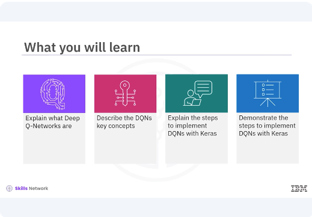
After watching this video, you'll be able to explain what are Deep Q-Networks. Describe the DQNs key concepts. Explain the steps to implement DQNs with Keras, demonstrate the steps to implement DQNs with Keras.
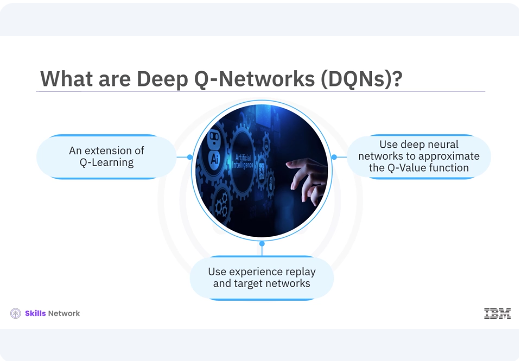
Deep Q-Networks (DQNs) are an extension of Q-Learning that uses deep neural networks to approximate the Q-Value function. Traditional Q-Learning becomes impractical for large state spaces due to the exponential growth of the Q-Table. DQNs address this limitation by using a neural network to estimate the Q-Values, allowing the algorithm to scale to environments with large or continuous state spaces. The DQN algorithm was famously used by DeepMind to achieve human-level performance in playing atari games. The key innovation of DQNs is the use of experience, replay and target networks to stabilize training and improve performance.
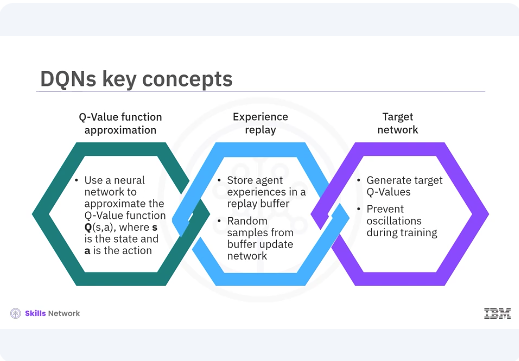
Lets look at some key concepts of DQNs. Q-Value function approximation. Instead of using a Q-Table, DQNs use a neural network to approximate the Q-Value function QSA where the A is the state, and the A is the action. Experience replay, DQNS store agent experiences state action reward next state in a replay buffer. During training, random samples from this buffer are used to update the network, breaking the correlation between consecutive samples and improving learning stability. Target network, a separate target network is used to generate the target Q-Values. This network is updated less frequently than the primary network, providing more stable target values and preventing oscillations during training.
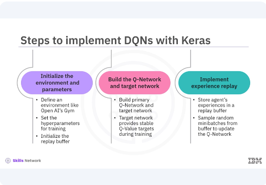
Implementing DQNs involves several steps similar to Q-Learning, but with additional components for experience, replay, and target networks. These steps initialize the environment and parameters. To begin DQNs, you define the environment using a platform like Open AI's Gym. Set the hyperparameters for training and initialize the replay buffer to store experiences. Build the Q-Network and target network. In Keras, you build two neural networks, the primary Q-network and the target network. Both networks have the same architecture, but the target networks weights are updated less frequently to provide stable Q-Value targets during training. Implement experience replay, experience replay involves storing the agents experiences in a replay buffer. During training, you sample random minibatches from this buffer to update the Q-Network, which helps in breaking the correlation between consecutive experiences.
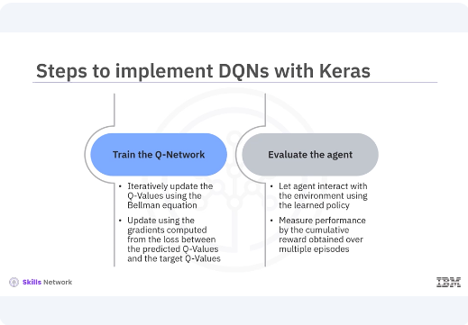
Train the Q-Network, training involves iteratively updating the Q-Values using the Bellman equation. The primary Q-Network is updated using the gradients computed from the loss between the predicted Q-Values and the target Q-Values obtained from the target network. Evaluate the agent, after training, you evaluate the agent by letting it interact with the environment using the learned policy. The agent's performance is measured by the cumulative reward obtained over multiple episodes.
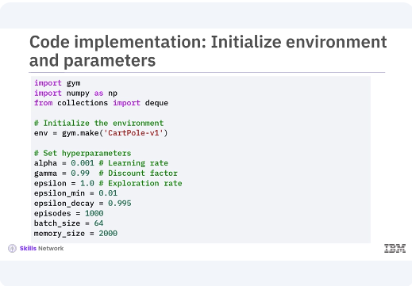
Here is the code implementation for each step, focusing on initializing the environment, building the Q-Network and target network, implementing experience replay, training the Q-Network, and evaluating the agent. You initialize the cart poll environment and define key hyperparameters such as the learning rate, discount factor, expiration rate, and batch size for experience replay.
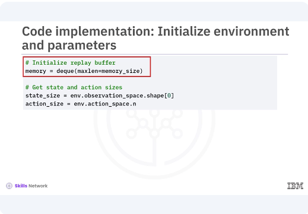
The replay buffer is initialized using a DQ with a fixed maximum size to store experiences.
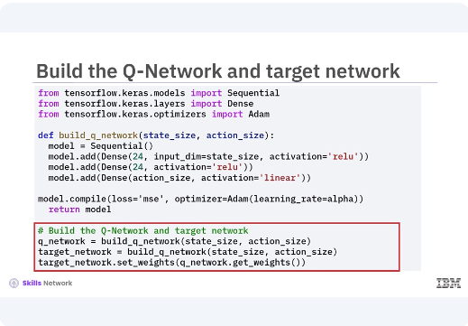
Two neural networks are created, the primary Q-Network and the target network. Both networks have the same architecture with two hidden layers containing 24 neurons with relu activation. The target networks weights are updated periodically to match the primary networks weights.
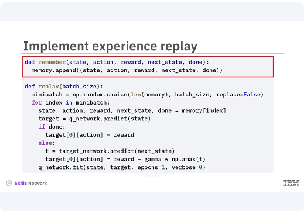
The remember function stores experiences in the replay buffer. The replay function samples random minibatches from the buffer to train the Q-Network, helping to break the correlation between consecutive experiences and stabilized training.
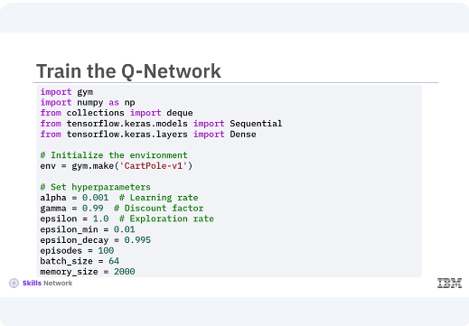
The training loop iterates over a specified number of episodes. For each episode, the agent interacts with the environment, selecting actions based on the Epsilon greedy policy.
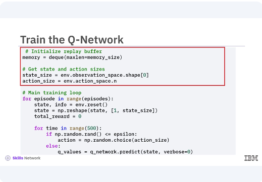
The agent's experience is state action reward. Next state, done are stored in the replay buffer.
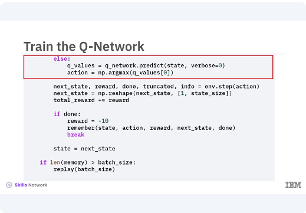
The Q-Values are updated using the Bellman equation, leveraging the target network for stable Q-Value targets.
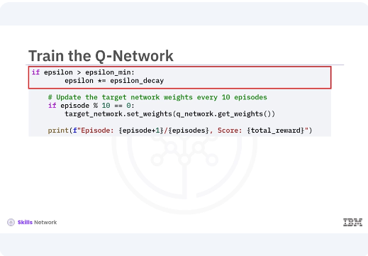
The exploration rate decays over time to balance exploration and exploitation, the target networks weights are periodically updated to match the primary networks weights.
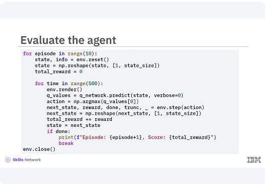
After training, the agent is evaluated by interacting with the environment using the learned policy. The environment is rendered to visualize the agents behavior and the total reward for each episode is printed. During evaluation, the agent primarily exploits the learned Q-Values to maximize rewards, demonstrating the effectiveness of the trained Q-Network.
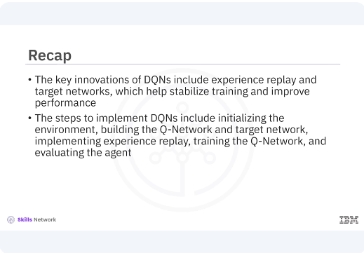
In this video, you learned, the key innovations of DQNs include experience replay and target networks, which help stabilize training and improve performance. The steps to implement DQNs include initializing the environment, building the Q-Network and target network, implementing experience replay, training the Q-Network, and evaluating the agent.